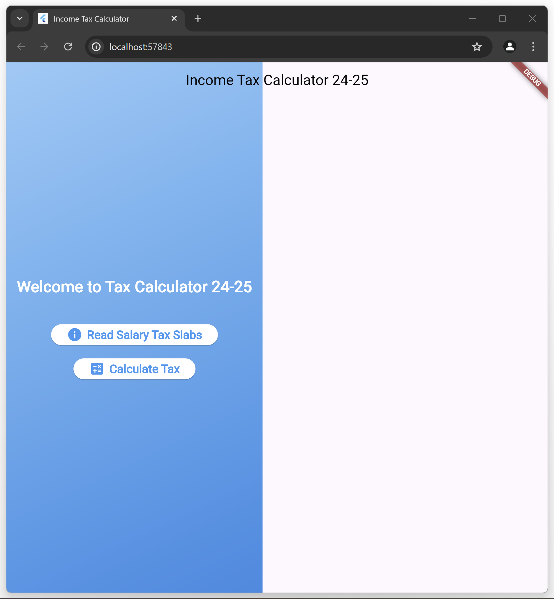
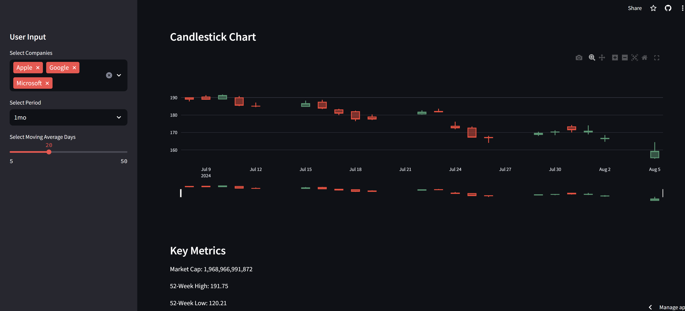
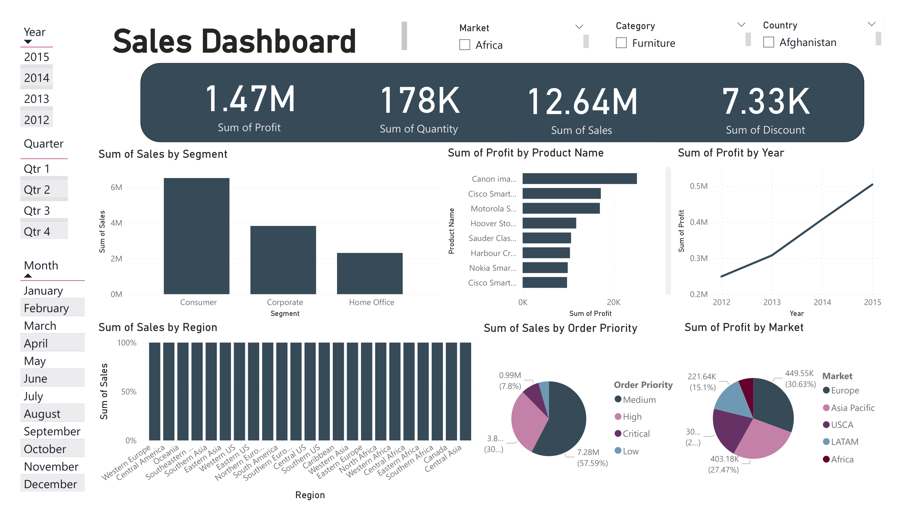
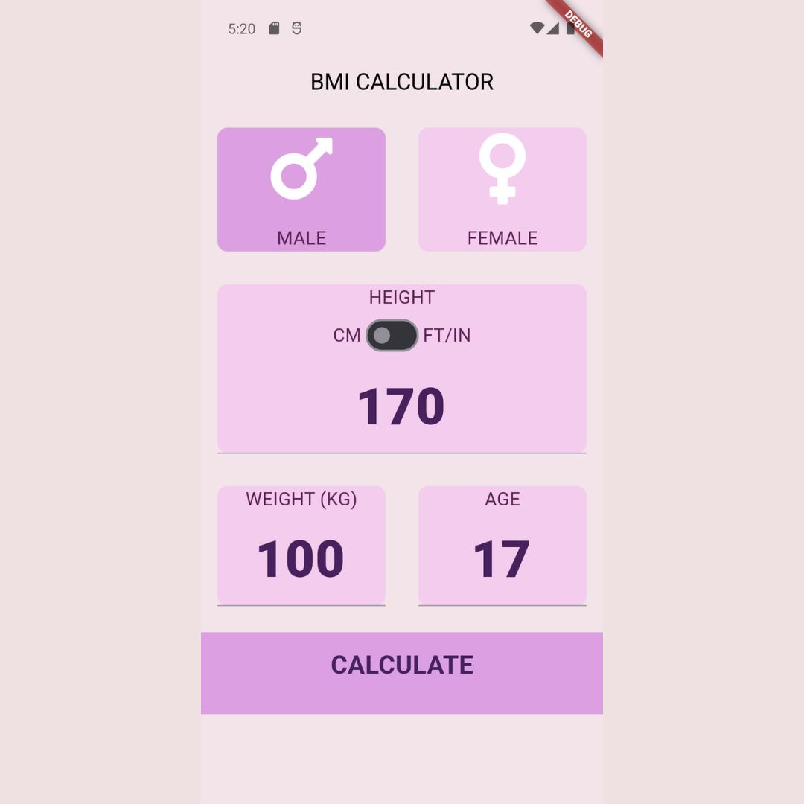
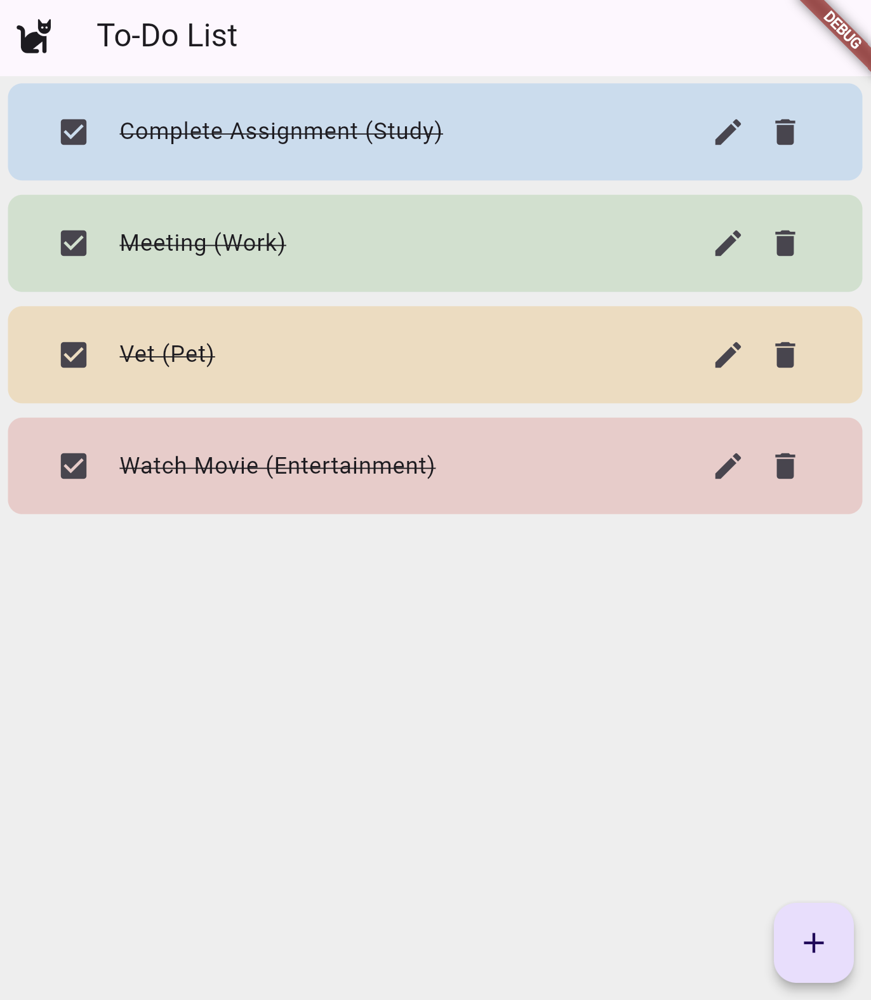
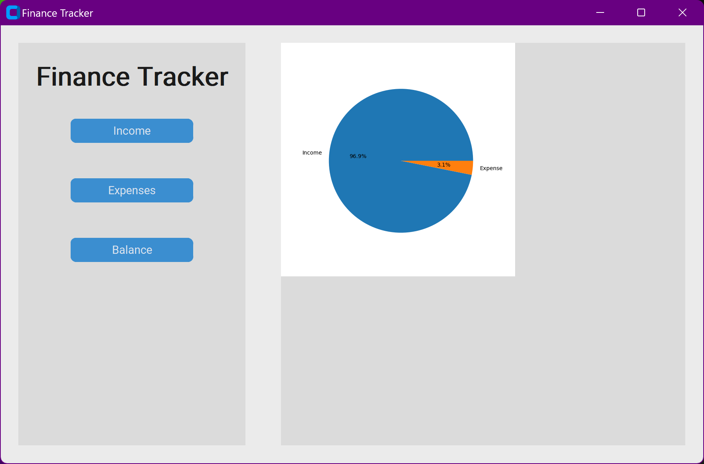

Currently a junior, pursuing a degree in Computer Science, I am passionate about technology, software development, and data science. My coursework includes Data Structures and Algorithms, Object-Oriented Programming, Calculus II, Discrete Mathematics, Linear Algebra, and Assembly Language. Actively participating in the Data Science Club and the Google Developer Student Club (GDSC), I collaborate on innovative projects and stay updated with industry trends. My significant projects include Credit Card Fraud Detection, Gold Price Prediction, and Data Cleaning in SQL, as well as a high-performance Sudoku Solver using RISC-V, a SAP1 computer with Digital Logic Design, and a Movie Storage Application using Binary Search Trees. I also developed a BMI Calculator and an Income Tax Calculator in Flutter. I am dedicated to continuous learning and personal growth, aiming to leverage my diverse tech stack to contribute to impactful
and innovative solutions.
Check out my services
Tools Used: Python, yfinance, Pandas, Matplotlib, Seaborn =, NumPy, SciPy & Jupyter Notebook

In this project, I performed an in-depth financial analysis and valuation of three major technology companies: Apple Inc. (AAPL), Microsoft Corporation (MSFT), and Alphabet Inc. (GOOGL). My focus was on leveraging data analytics to assess their financial health by analyzing income statements, balance sheets, and cash flow statements. I employed Python, yfinance, and Pandas for data extraction and manipulation, and used Matplotlib and Seaborn for data visualization to uncover trends and insights. Additionally, I conducted a Discounted Cash Flow (DCF) analysis to estimate the intrinsic value of each company and performed sensitivity analyses to evaluate the impact of different assumptions on valuation. This project allowed me to apply advanced
data analysis techniques to understand and compare the financial metrics and market valuations of these leading tech firms.
Tools Used: Flutter, UI/UX, Syncfusion

The Income Tax Calculator 24-25 is a sophisticated Flutter application designed to streamline the process of calculating income tax for the fiscal year 2024-2025.
Built with a user-centric approach, this app features a sleek and intuitive interface, incorporating essential functionalities such as reading salary tax slabs and calculating precise tax amounts.
Homepage welcomes users with a clear and engaging message, leading them effortlessly to explore the tax slabs or compute their taxes with ease. Utilizing the power of Flutter and incorporating dependencies like Syncfusion for charts and the intl package for internationalization, the app ensures robust performance and a seamless user experience.
This project demonstrates my proficiency in Flutter development, UI/UX design, and implementing complex functionalities within a mobile application, showcasing my ability to deliver practical and aesthetically pleasing software solutions.
Tools Used: Python, yfinance, Pandas, Matplotlib, Seaborn, NumPy, & Jupyter Notebook
In this project, I explored the predictive accuracy of the traditional Black-Scholes model compared to modern machine learning models like Random Forest and XGBoost for pricing financial options. Using historical stock data from Yahoo Finance, I implemented feature engineering techniques, such as volatility calculation, to build machine learning models capable of capturing complex market behaviors. The project revealed that both Random Forest and XGBoost significantly outperformed the Black-Scholes model, particularly for out-of-the-money (OTM) options, where the flexibility of machine learning proved superior. Through model tuning and performance evaluation, XGBoost emerged as the most accurate and generalized model. This analysis demonstrates the benefits of applying data-driven
approaches to option pricing, highlighting the limitations of traditional models and the potential for machine learning to deliver more accurate valuations in financial markets.
Tools Used: Python, Machine Learning & Jupyter Notebook
The gold price prediction project leverages machine learning techniques to forecast future gold prices using a dataset of economic indicators and historical market data. The workflow encompasses data preparation with Pandas for cleaning and handling missing values, exploratory data analysis (EDA) with Matplotlib and Seaborn to uncover trends and correlations, and feature engineering to develop relevant features like moving averages. The model training is performed using RandomForestRegressor from Scikit-learn, evaluated with metrics such as Mean Absolute Error (MAE) and R-squared. Additionally, time-series analysis is applied to capture temporal dependencies, and interactive visualizations with Plotly enhance the
exploration of data trends and model predictions.
Tools Used:Streamlit, yfinance, pandas, plotly, seaborn, Matplotlib

I developed a sophisticated stock price dashboard using Streamlit. This dashboard allows users to visualize and analyze the performance of various stocks over different time periods.
Key features include real-time stock price tracking, Bollinger Bands, moving averages, candlestick charts, and key financial metrics.
Users can compare the performance of selected stocks through various comparison charts, including closing prices, volumes, moving averages, and daily returns.
Tools Used:Pandas, NumPy, Scikit-Learn, Matplotlib, Seaborn, Joblib.

This project showcases a comprehensive spam detection system built using machine learning techniques. The system classifies emails into "spam" or "ham" based on their content. It starts by preprocessing and vectorizing the text data with a CountVectorizer, and then trains a Logistic Regression model to predict email categories. The model's performance is evaluated using accuracy metrics, a confusion matrix, and a detailed classification report, with visualizations for class distribution, word frequency, and the ROC curve. For deployment, the model and vectorizer are saved and
integrated into a Streamlit web application. This app allows users to input email text and receive real-time spam predictions, demonstrating the model's effectiveness with training accuracy of 99.80% and validation accuracy of 98.03%.
Tools Used: Python(Pandas, NumPy, Seaborn, Scikit-learn, Matplotlib ), Machine Learning & Jupyter Notebook
The Iris Flowers Classification project is a fundamental machine learning exercise designed to classify Iris flowers into three species: Setosa, Versicolor, and Virginica. This project uses the well-known Iris dataset, which includes measurements of flower petals and sepals. By leveraging a K-Nearest Neighbors (KNN) classifier, the project demonstrates the process of data preprocessing, exploratory data analysis (EDA),
feature scaling, model training, and evaluation.
Tools Used: Python & Jupyter Notebook
This project focuses on detecting fraudulent credit card transactions through exploratory data analysis (EDA) and machine learning techniques. Utilizing a dataset containing anonymized PCA features alongside 'Time' and 'Amount' variables, the goal was to identify patterns and build predictive models to distinguish between legitimate and fraudulent transactions. The project involved comprehensive data visualization using Python libraries like Matplotlib and Seaborn to explore distributions, correlations, and temporal trends in transaction data. Machine learning model
Logistic Regression was implemented to detect anomalies indicative of fraud.
Tools Used: Python & Jupyter Notebook

I conducted exploratory data analysis (EDA) on a global dataset of mental health disorders, using Python (Pandas, Matplotlib, Seaborn). The dataset covered schizophrenia, bipolar disorder, eating disorders, anxiety disorders, drug use disorders, depression, and alcohol use disorders across countries and years. I cleaned data, handled missing values, normalized for consistent comparison, and visualized trends with line charts, compared prevalence with bar charts, and explored correlations with heatmaps. K-means clustering identified country groups with similar disorder rates, offering insights into global mental health challenges.
Tools Used: PowerBI and Excel

I developed a comprehensive PowerBI sales dashboard that
empowers users to gain valuable insights into sales performance through a range of interactive filters and visualizations. This dashboard allows users to filter data by market category and country, enabling a tailored view of sales dynamics in different regions. Key metrics displayed include the sum of profit by product name and year, providing a clear picture of profitability trends over time. Additionally, the dashboard features visualizations of total sales by region, offering a geographical perspective on sales distribution. Users can further refine their analysis with filters for year, month, and quarter, ensuring they can drill down into specific time periods for detailed examination. This dashboard not only facilitates data-driven decision-making but also
enhances the understanding of sales patterns and market behavior.
In my Nashville Housing Data Cleaning project, I undertook the task of refining a dataset sourced from the Nashville housing market spanning the years 2013 to 2016.
Using MySQL, I created a staging table to import and meticulously clean the data, addressing issues such as date formatting, null values in addresses, and normalization of 'Sold As Vacant' indicators. Through systematic SQL queries, I segmented addresses into separate fields and ensured data consistency by removing duplicates. This project not only honed my skills in
database management and SQL proficiency but also underscored the importance of data quality in facilitating meaningful analysis and decision-making..

Developed using Flutter, the BMI Calculator is a mobile application designed to provide users with a streamlined method to calculate their Body Mass Index (BMI) based on height and weight inputs. Featuring a responsive and intuitive interface, the app allows users to input measurements in centimeters or feet/inches directly through text fields, ensuring accuracy and convenience. Upon calculation, the app instantly categorizes BMI results and offers personalized health recommendations, promoting healthier lifestyle choices. This project demonstrates proficiency in Flutter development, UI/UX design, and effective implementation of BMI calculation algorithms for mobile platforms.

Cat-themed todo list app, where organization meets whimsical charm. Tailored for cat lovers, this app not only keeps your tasks in check but also adds a delightful twist with customizable colors for different categories. Each task category is assigned a unique hue, allowing users to visually organize their priorities with ease. With playful paw animations and soothing meow sounds, staying on top of tasks becomes a joyous experience. Whether managing personal errands or professional projects, this app combines functionality with feline-inspired aesthetics to make task management a delightfully colorful endeavour.
Tools Used: Python, Tkinter, Matplotlib

The Finance Tracker Application is a sleek and user-friendly tool designed to help users manage their finances efficiently.
Developed with Python's customtkinter library, it features a modern interface with a light blue theme, making
financial management visually appealing. The application allows users to easily track and categorize income and expenses, with quick access buttons for common categories like Utility, School,
and Groceries. A interactive date picker ensures accurate transaction recording, while real-time balance visualization
using matplotlib provides clear insights into income and expense distribution.